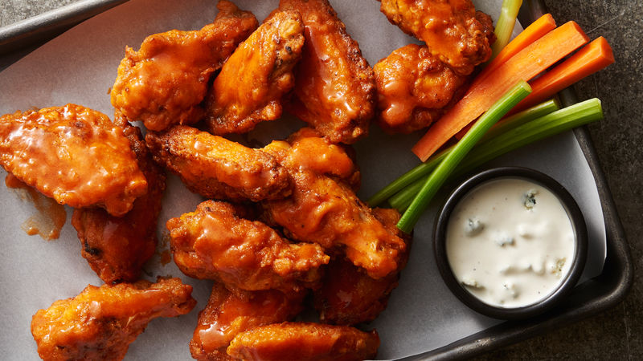

Buffalo Wings

Whether it's game day or fight night, these buffalo wings will hit the spot!
Ingredients
- cooking spray
- ¾ cup all-purpose flour
- ½ teaspoon cayenne pepper
- ½ teaspoon garlic powder
- ½ teaspoon salt
- 20 chicken wings
- ½ cup melted butter
- ½ cup hot pepper sauce (such as Frank's RedHot®)
Directions
- Line a baking sheet with aluminum foil, and lightly grease with cooking spray.
- Place flour, cayenne pepper, garlic powder, and salt into a resealable plastic
bag, and shake to mix. Add chicken wings, seal the bag, and toss until well
coated with the flour mixture.
- Transfer wings to the prepared baking sheet and refrigerate for at least 1 hour.
- Preheat the oven to 400 degrees F (200 degrees C).
- While the oven is preheating, whisk together melted butter and hot sauce in a small bowl
- Dip the wings into butter mixture, and place back on the bakking sheet
- Bake in the preheated oven for 20 minutes. Flip wings and continue to cook until
crispy on the outside and no longer pink in the center, about 25 more minutes.